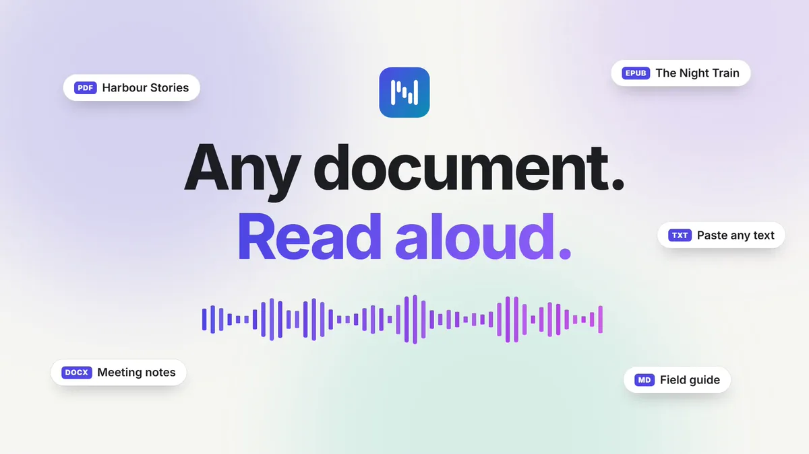

Before
Git, Node.js and a terminal, a first-run download of about 0.7 GB, and the app in a browser tab.
My first shipped desktop app / Product case study
Natural text-to-speech. Private, powerful, and local.
TTSNative is my first product with its own shipped desktop app: a Windows 11 app you install like any other, with nothing else to set up. I designed and built it as a private document reader that turns PDFs, EPUBs, and Word documents into natural speech on your own computer, with optional consent-based voice cloning.

The problem
TTSNative reads PDFs, Word documents, EPUBs, MOBI and FB2 books, web pages, Markdown and text aloud with natural voices, generated on your own computer. There are no accounts, no subscriptions, no telemetry and no cloud inference, and your documents and recordings stay on the machine.
It started as Local TTS, a 250-line Gradio script. It worked for plain text and EPUB on my machine, but PDFs silently produced no audio, its dependencies were unpinned, its model downloads weren't verified, and it had no tests, license or CI. Version 2.0 rebuilt it from scratch as a document reader and voice studio.
My first shipped desktop app
PicPledge and Recalen run on the web and on phones. TTSNative is the first product I've shipped as its own desktop app. Through version 2.0, using it meant installing Git and Node.js and starting it from a terminal, which shut out most of the people a private reader is for. Version 2.1 changed that.
Git, Node.js and a terminal, a first-run download of about 0.7 GB, and the app in a browser tab.
An installer of about 400 MB for Windows 11, with no developer tools or administrator rights. The 54 built-in voices are included, and it opens in its own window from the Start menu.
A small shell, not a rewrite. I wrapped the existing interface in a small Tauri 2 window instead of rebuilding it. It uses the WebView2 runtime that comes with Windows 11, where Electron would add about 100 MB of its own browser and runtime. The app starts the same local server, bundled with its own Python, and stops it on exit, so the reader's protections carry over unchanged.
Updates that keep the promise. New versions come only from GitHub Releases, and each one's signature is verified before anything installs. The app says what's new and waits for you to agree. Checking for a new version is the one network request the app makes by itself, at most twice a day, and you can turn it off.
Tested on clean machines. Every change to the app is built and tested in CI on a clean Windows runner: a silent install, real speech, an MP3 export, data that survives a close and a crash, and an update path that refuses a bad signature or a broken download. I also took the 2.2.0 release candidate through a clean Windows 11 virtual machine, including an upgrade from the published 2.1.0 that kept its data.
The tradeoffs. The direct download isn't code-signed yet, so Windows calls its publisher unknown and asks you to confirm before it runs. Each release also builds a Microsoft Store package, the route to installing without that warning, but it isn't listed yet. The app is for Windows 11 only: macOS and Linux still run from source, and the full app hasn't been tested by hand there.
Download TTSNative for WindowsMy role
I came up with the product, designed the experience, developed the application, and own its releases.
Product decisions
What I chose, why it mattered, and what I accepted in return.
I made TTSNative local-only. It runs on your own machine, works offline after setup, and never sends documents or recordings anywhere on its own. It uses the network only for things you start: downloads from pinned addresses with checksums, importing a web page, or sending an export to your own Audiobookshelf server. The one exception is the Windows app's check for a new version, which you can turn off.
Why I chose it. Documents and voice recordings are personal. A reader that keeps them on your computer doesn't ask you to trust a server.
The tradeoff. The Windows installer carries the voice model, so it's a large download up front, and a source install needs a first-run download of about 0.7 GB for the basic reader. And when the voice-cloning engine's locked packages change, the app offers an update rather than downloading packages you didn't ask for.
The service binds to 127.0.0.1, validates the Host header, requires a custom header on requests that change state, and never enables CORS. Access from another device needs LAN mode, which you turn on from the computer, turns off after every restart, works only on a trusted network and pairs each device with a one-time code, or an explicit network mode with an access token. Model downloads are pinned and verified by SHA-256.
I made the app synthesize one sentence at a time, on demand, just ahead of the listener, and cache each sentence's audio by its content.
Why I chose it. Nobody should wait for a book to render before hearing it. Because each sentence is its own clip, the read-along highlight is exact, and seeking, switching voices and resuming an export are cheap.
The tradeoff. Rhythm across sentences isn't modeled; pauses are added by the kind of boundary instead. Word-by-word highlighting waits until real word timings are available.
The browser asks for the current sentence at playback priority and the next three at prefetch priority. Skipping cancels work nobody is waiting for, and exports run at a lower priority than live playback.
I put the voice-cloning engine, Chatterbox Turbo, in its own isolated environment, installed only if you choose it in Settings.
Why I chose it. Its dependencies conflict with the reader's, and it is a multi-gigabyte download. The basic reader should never need a GPU or that download.
The tradeoff. Cloning is a separate install, about 8 GB more with NVIDIA CUDA, and there are two Python environments to maintain.
The cloning worker is driven over a JSON-lines protocol on standard input and output. If it crashes, the server keeps running, and it unloads after 10 idle minutes to free graphics memory.
Voice Studio asks you to confirm that the voice is yours, or that its speaker gave permission, before it creates a voice. Recordings stay on your computer, and one action permanently deletes the recording, the voice and all audio made with it.
Why I chose it. A cloned voice can be used to impersonate someone. The person whose voice it is should stay in control of it.
The tradeoff. No cloned voices ship with the project, so everyone records or imports their own. A published voice could be used by anyone to impersonate its speaker.
Quality checks run as you record and again on the server, which also requires the consent confirmation. Audio generated with a cloned voice carries Resemble AI's inaudible Perth watermark. A voice shared as a file is checked and previewed before import, and you confirm you have its owner's permission.
Visitors to the website can try speech in their browser. The demo uses the browser's own voices, says plainly that they aren't TTSNative's, and flags online voices, which some browsers send to a cloud service.
Why I chose it. The website promises no cookies, analytics or third-party requests. Running TTSNative's voice model in the browser would mean downloading about 90 MB or more per browser from a model host.
The tradeoff. The demo sounds different from the app, so the page says so.
The demo uses the browser's Web Speech API. I'll revisit running the real model in the browser when a small enough model, with a phonemizer whose license allows it, can be hosted on the site itself.
Product walkthrough
A two-minute recording of the running app with its real narration. The steps below explain the choices behind the flow.
Recorded from the production build with the real models. The cloned voice in the Voice Studio step is synthetic: its reference is one of the built-in voices, not a real person. The recording predates the Windows app, so it shows the same interface in a browser, without the newer features described below.
Open a PDF, Word document, EPUB, MOBI or FB2 book, HTML, Markdown or text file, import a public web page by its address, or paste text. Or start from the 25 public-domain books included with the app, six of them with a curated multi-voice cast. Chapters come from the outline, the table of contents or the headings. A scanned PDF with no text is reported rather than silently skipped.
Pick from 54 built-in voices, with quality grades and side-by-side comparison on your own passage. The text is highlighted sentence by sentence, and the app remembers where you stopped.
Give characters their own voices, play quiet background music under the narration, or place sound effects in a document. A Sounds tab can suggest a few where the text describes a sound, using word rules on your computer rather than a language model. Music and effects stay off until you turn them on.
Voice Studio makes a voice from a 10–20 second recording or an existing clip, with live quality checks and explicit consent. A guided session of about 15 passages builds a more faithful studio voice.
Save the whole document or chosen chapters as WAV, MP3, an M4B audiobook with chapters and a cover, or a read-along EPUB, as one file or one per chapter. An interrupted export resumes from the audio already made.
Improving the studio voice
Voice Studio's guided studio session used to ask for 48 passages: about 30 minutes of recording. That was a lot to ask, so I traced what the voice engine actually uses and ran a blind listening test of six voices on ten new items.
48 suggested passages. The complete voice used the audio of only 14 of its 42 takes, and its averaged speaker embeddings settle after about 8–12 takes.
About 15 suggested passages, with the most useful one to record next. The voice tiers say what they mean, and that no model is trained.
What the test found. A voice from 13 takes beat a quick clone on 9 of 10 items (p = 0.02). The complete voice, from 42 takes, was no better than that early one. The careful recording setup made the difference, not the length.
These app changes shipped in version 2.1. The test was one listener and ten items: a careful first test, not a study.
Read the studio voice case studyEngineering depth
I built the application and its tests alongside the product. These figures describe the scale of that work.
Source snapshot · Nov 5, 2026, at version 2.2.0 (commit 2e45ac0), now including the Rust desktop shell. Physical lines include comments and blanks. Dependencies, generated output, assets, bundled books and data files, and lockfiles are excluded.
CI coverage report · Nov 2, 2026, on the 2.2.0 commit: 100% of statements and branches in both the web app and the server, across 663 web tests and 1,351 server tests. CI requires 100% of statements, branches, functions and lines in both. Coverage measures unit and component tests, which use a fake engine instead of real models. The web app has no coverage-ignore comments; the server has two, for a Windows-only call and a guard that can't be reached.
| Measurement | Result |
|---|---|
| First sentence after the model loads (~70 characters) | 1.06 s |
| Median sentence (~70 characters) | 0.88 s |
| A 100-sentence document | 9.2 minutes of audio in 117.5 s, about 5× faster than listening |
| A cached sentence over HTTP (median of 20) | 71 ms |
| Extracting a 300-page text PDF, sandboxed | 2.25 s |
| Chatterbox Turbo on the GPU | Real-time factor 0.58 |
Windows 11, an AMD Zen 3 desktop CPU with 32 logical cores, 64 GB of RAM and an NVIDIA RTX 3080. Kokoro runs on the CPU only. No other hardware was measured, and these figures were taken from a source install, before the Windows app shipped.
Delivery scope
React · TypeScript · FastAPI · SQLite · Tauri · Rust · Kokoro · Chatterbox Turbo
Results and status
TTSNative 2.0.0 was released on October 19, 2026, under its earlier name, Local TTS: a complete rebuild of the original prototype. Since then I've renamed it TTSNative, with a new identity and a new website. Version 2.1, in October, was the first release you can install on Windows 11, and it brought studio voices, the included books, character voices, background music, audiobook export, a pronunciation dictionary, bookmarks and notes, and search inside documents. Version 2.2, in November, added sound effects, six more music tracks and an immersive reading experience for the six curated books.
TTSNative has no accounts or analytics, so this case study reports no usage figures. The full app was tested on Windows 11, including the installed app on a clean virtual machine. On macOS and Linux, CI runs the server tests, but the full app wasn't tested by hand. Safari was tested with Playwright's WebKit build, not on Apple hardware.
What this work represents
A private app has to keep its promise everywhere: in setup, in updates, in voice cloning, and even in the website's demo. Owning the whole product meant making each of those choices hold to it.